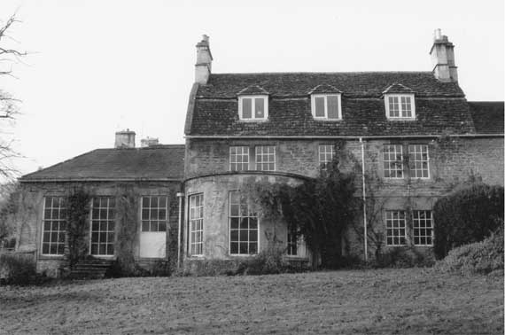

Type of building:
Attached house (former vicarage)
Listing:
Grade ll
Plan and elevation:
3 bay double pile two storey with cellar and attics with later extensions.
Summary of the probable main building
history:
Mid 18th Century on 17th Century foundations. Early 19th Century additions.

East elevation
Exterior:
The east elevation is of coursed rubble stone with ashlar quoins and a string
course covered with a stone slated mansard roof (gabled gambrel) with coped raised
verges and ashlar chimney stacks. There are two grouped ground floor windows separated
by a central square mullion. On the first floor there is one central window and
four outer windows grouped in two pairs all with dressed stone surrounds. All
these windows are 6 over 6 sashes. The attic houses three hipped dormers with
leaded casement windows. There is a projecting single storey bowed extension under
a moulded cornice lit by three 6 over 9 sash windows with dressed stone surrounds.
The entry is slightly off-centred and has an over-light. To the left a single
storey extension has three 6 over 9 windows. The central window of this extension
has steps up from the garden. There is a moulded cornice. The roof is hipped and
slated.
During renovations in 1999 the skeleton of a cat was found beneath the threshold, which may be a superstitious deposit if not particularly appropriate for a vicarage.
Date & development:
An Ordinance of the vicarage of “Batheneston” for about the year 1320
provides for the vicar to have his dwelling next the Church of St. John in the
vill of Batheneston, with a garden and curtilage and with the hay of the cemetery
(Bath Chartulary No.656). Deeds for the former vicarage survive from the 16th
Century but, specifically, a transcription of a Glebe Terrier of 1623 identifies
as belonging to the `Vicaridge' of Batheaston `One Mansion House together with
a Curtelege & Garden thereunto belonging situate near the Church, the South
East side thereof ... (and) ...One Meadow containing by Estimation two acres (be
the same more or less) between the Vicaridge house and the Brook which comes by
the Mill'. This appears to confirm that the present building occupies the same
site. Furthermore, ` The house noted in the terrier of 1638 was of one storey
' (Dobbie p.48). Nevertheless, the only possible evidence of the 17th Century
house (or earlier) is the cellar area with a blocked mullion window, now below
ground level although, presumably, once overlooking an area. The rest of the structure
is either mid 18th Century (mansard roof, room spaces, 6 over 6 sash windows,
residual built in cupboards and dressers) or early 19th Century (the bow fronted
single storey extension). As again stated by Dobbie (p48), the main structure
probably dates from the incumbency of the Rev. Mark Hall (1716-1766) although
architect planned additions were built during the incumbency of the Rev. J.J.
Conybeare (1812-1824), the plans for which survive. Conybeare was succeeded as
vicar by the Rev. Spencer Madan who was in occupation at the time of the preparation
of the Tithe Map and Apportionment Schedule, 1840.
References and bibliography:
- An English Rural Community, B.M. Willmott Dobbie, Bath University Press, 1969
- Batheaston Tithe Map and Apportionment Schedule 1840, Somerset Record Office
- Parsonage Deeds and Glebe Terrier, Somerset Record Office
- Two Chartularies of the Priory of St. Peter at Bath, Somerset Record Society,
1893
- Bath & County Graphic Magazine - Bath Reference Library
- Batheaston Society Archives
Survey Drawings
Ground
Plan |
Basement Plan |
East
Elevation |
Section |
Images from the Archives
Sketch
by Miss Charlotte Bignell 1839 |
Sketch 1901 Bath
& County Graphic |